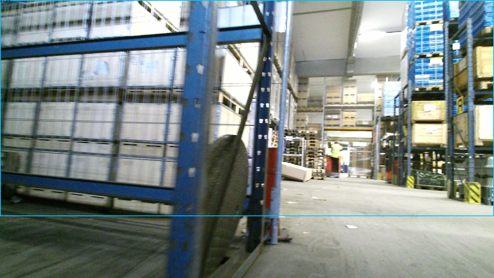
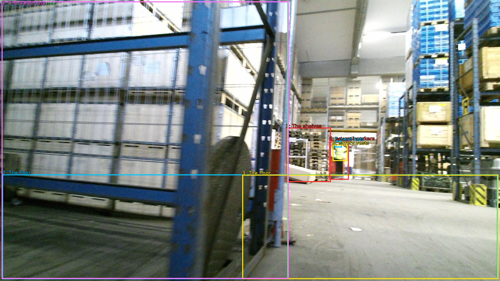

The image shows a large warehouse with multiple rows of shelves. The shelves are filled with various items such as boxes, pallets, and other storage containers. The floor is made of concrete and there is a blue metal frame on the left side of the image. The warehouse appears to be well-lit with natural light coming in from the windows on the right side. In the background, there are several workers wearing hard hats and safety vests. The image is taken from a low angle, looking down on the warehouse floor.


Original · Caption raw · Grounding raw · Koordinate
Številke so lokalni ID regije. Dolge slikovne oznake so skrajšane; spodaj so celotne fraze. Napovedane regije se lahko prekrivajo ali opisujejo skupine.
| ID | Celotna fraza | bbox xyxy |
|---|---|---|
| 1 | The shelves | [1097.280029296875, 490.8600158691406, 1270.0799560546875, 699.300048828125] |
| 2 | The floor | [8.639999389648438, 670.1400146484375, 1911.3599853515625, 1072.9801025390625] |
| 3 | The floor | [930.239990234375, 671.2200317382812, 1913.2799072265625, 1072.9801025390625] |
| 4 | a blue metal frame | [6.71999979019165, 5.940000057220459, 1106.8800048828125, 1071.9000244140625] |
| 5 | The warehouse | [6.71999979019165, 5.940000057220459, 1108.7999267578125, 1071.9000244140625] |
| 6 | several workers | [1264.3199462890625, 539.4600219726562, 1339.199951171875, 690.6600341796875] |
| 7 | hard hats | [1283.52001953125, 540.5400390625, 1312.3199462890625, 566.4600219726562] |
| 8 | safety vests | [1277.760009765625, 555.6600341796875, 1335.3599853515625, 618.300048828125] |